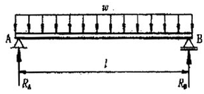

자동차차체수리기능사 (2001-07-22 기출문제)
1과목: 자동차공학
1. 어떤 기관의 연소실 체적이 210cc이고 행정체적이 1470cc이다. 이 기관의 압축비는?
- 6 : 1
- 7 : 1
- 8 : 1
- 9 : 1
(정답률: 61%)

2. 자동차로 400m의 언덕길을 왕복하는데 0.15ℓ의 연료가 소비되었다. 내려올 때 연료 소비율이 8㎞/ℓ였다면 올라갈 때의 연료 소비율은?
- 8㎞/ℓ
- 6㎞/ℓ
- 4㎞/ℓ
- 3㎞/ℓ
(정답률: 54%)
3. 타이어 형상에 의한 분류에 해당되지 않는 것은?
- 레디얼 타이어
- 튜브리스 타이어
- 스노우 타이어
- 편평 타이어
(정답률: 58%)
4. 기동 전동기의 전기자 코일과 계자코일은 어떻게 연결되었는가?
- 직렬로 연결되어 있다.
- 병렬로 연결되어 있다.
- 직, 병렬로 연결되어 있다.
- 각각의 단자에 연결되어 있다.
(정답률: 64%)
5. 50PS의 엔진으로 효율 100%인 기구를 통하여 50㎏f의 물체를 75m 올릴 때 걸리는 시간은?
- 0.5초
- 1초
- 20초
- 1분 15초
(정답률: 53%)
6. 기관 동력계에 의하여 측정이 되어 나오는 출력(마력)은?
- 연료 마력
- 마찰 마력
- 지시 마력
- 정미 마력
(정답률: 40%)
7. 구동피니언이 링기어 중심선 밑에서 물리게 되어 있는 기어는?(오류 신고가 접수된 문제입니다. 반드시 정답과 해설을 확인하시기 바랍니다.)
- 직선베벨 기어
- 스파이럴 기어
- 스퍼어 기어
- 하이포이드 기어
(정답률: 77%)
8. 제동장치에 대한 설명 중 옳은 것은?
- 브레이크 오일 파이프내에 공기가 들어가면, 페달의 유격이 작아진다.
- 마스터 실린더 푸시로드 길이가 길면, 브레이크 작동이 잘 풀린다.
- 브레이크 회로내의 잔압은 작동 지연과 베이퍼록을 방지한다.
- 마스터 실린더의 첵밸브가 불량하면 한쪽만 브레이크가 작용하게 된다.
(정답률: 71%)
9. 기관의 회전력을 액체의 운동에너지로 바꾸고 이 에너지를 다시 동력으로 바꾸어 변속기에 전달하는 클러치는?
- 다판 클러치
- 단판 클러치
- 유체 클러치
- 리어 클러치
(정답률: 82%)
10. 전자제어 분사장치에서 엔진의 각종 센서 중 입력 신호가 아닌 것은?
- 스로틀 포지션 센서
- 냉각 수온 센서
- 크랭크 각 센서
- 인젝터
(정답률: 72%)
11. 전자 제어식 가솔린 연료 분사장치의 특징 중 틀린 것은?
- 배기가스 유해성분이 감소된다.
- 벤투리가 없기 때문에 공기의 흐름 저항이 있다.
- 저온시 시동밸브와 공기밸브를 작동시켜 공기량을 조절한다.
- 냉각수 온도 및 흡입공기의 악조건에 대해 운전성이 좋다.
(정답률: 65%)
12. 전자제어 연료분사식 기관에서 사용되는 센서가 아닌 것은?
- 차속센서
- 노크센서
- CO센서
- O2센서
(정답률: 63%)
13. 오일이 연소되는 원인이 아닌 것은?
- 피스톤과 실린더 사이의 간극이 과다할 때
- 밸브가이드 오일실이 불량할 때
- 오일팬내의 오일이 규정량보다 낮을 때
- 밸브가이드가 과다 마모되었을 때
(정답률: 74%)
14. 가솔린 기관의 전자제어 연료분사 장치를 구성하는 부품이 아닌 것은?
- 압력 조절기
- 인젝터
- 웨스트게이트 밸브
- ECU
(정답률: 73%)
15. 자동차 시동회로에 대한 설명으로 틀린 것은?
- B단자까지의 배선은 굵은 것을 사용해야 한다.
- B단자와 ST단자를 연결해 주는 것은 점화 스위치이다
- 기동전동기의 B단자와 M단자를 연결해 주는 것은 기동전동기 마그네트 스위치이다.
- 축전지 접지가 좋지 않더라도 (+)선의 접촉이 좋으면 기동전동기의 작동에는 지장이 없다.
(정답률: 85%)
16. 자동차 에어컨에서 고압의 액체 냉매를 저압의 액체 냉매로 바꾸는 구성품은?
- 압축기(compressor)
- 리퀴드 탱크(liquid tank)
- 팽창 밸브(expansion valve)
- 에버퍼레이터(evaperator)
(정답률: 57%)
17. 클러치의 구비조건이 아닌 것은?
- 동력전달이 확실하고 신속할 것
- 방열이 잘 되어 과열되지 않을 것
- 회전부분의 평형이 좋을 것
- 회전관성이 클 것
(정답률: 87%)
18. 기동전동기 중 오버런닝 클러치를 사용하지 않는 방식은?
- 벤딕스식
- 전기자 섭동식
- 피니언 섭동식
- 링기어 섭동식
(정답률: 55%)
19. 에어컨 냉방사이클의 작동 순서로 맞는 것은?
- 압축기 → 증발기 → 응축기 → 팽창밸브
- 팽창밸브 → 증발기 → 압축기 → 응축기
- 응축기 → 증발기 → 압축기 → 팽창밸브
- 증발기 → 팽창밸브 → 압축기 → 응축기
(정답률: 64%)
20. 자동변속기의 주요 구성부품이 아닌 것은?
- 유압식 토크컨버터
- 유성기어 세트
- 등속 조인트
- 유압제어 유닛
(정답률: 73%)
2과목: 자동차차체정비
21. 치수와 같이 사용되는 기호는 어느 부분에 기입하는가?
- 치수 숫자 뒤
- 치수 숫자 위
- 치수 숫자 아래
- 치수 숫자 앞
(정답률: 57%)
22. 보의 평형 조건만으로 풀 수 없는 보는?
- 외팔보
- 단순보
- 내다지보
- 고정지지보
(정답률: 44%)
23. 용접이나 절단토치의 끝에 붙이는 불꽃이 나오는 구멍 부분의 명칭은?
- 팁(Tip)
- 필터
- 아크
- 팁 홀더
(정답률: 82%)
24. 모노코크 보디의 장점이 아닌 것은?
- 단독 프레임이 없기 때문에 차량의 중량이 가볍다.
- 구조상으로 바닥면이 낮기 때문에 실내공간이 넓다.
- 충격흡수 효과가 높아 안전성이 뛰어난다.
- 새시로 부터의 소음과 진동이 차체에 전파되기쉽다.
(정답률: 78%)
25. 금속재료에 외부로 부터 어떤 힘을 가하였을 때 나타나는 성질을 무엇이라 하는가?
- 금속재료의 변태성
- 금속재료의 기계적 성질
- 금속재료의 외강성
- 금속재료의 화학적 성질
(정답률: 66%)
26. 금속재료를 열가공할 때의 불꽃 색깔과 온도를 표시한 것 중 틀리는 것은?
- 적색 - 700℃
- 황색 - 900℃
- 담황색 - 1,100℃
- 백색 - 1,200℃
(정답률: 51%)
27. 분체 입자의 크기(30-70μ)에 따라 도장하는 방법은?
- 유동 침적법
- 산포법
- 용사법
- 정전분무 도장법
(정답률: 60%)
28. 쇠톱작업시 주의사항으로 틀리는 것은?
- 일감에 대해 바른 자세를 취한다.
- 톱은 일직선으로 움직인다.
- 톱을 밀때나 당길때 균등한 압력을 준다.
- 톱날의 전체길이를 사용하여 절삭한다.
(정답률: 59%)
29. 2차 무부하 전압이 70V, 2차 부하전류가 200A 인 경우 1차측의 입력은?
- 10 KVA
- 12 KVA
- 14 KVA
- 16 KVA
(정답률: 64%)
30. 일반적으로 판금 재료에 이용하지 않는 재료는?
- 연강
- 고탄소강
- 고장력강
- 내식강
(정답률: 35%)
31. 전기 아크용접에서 케이블이 가늘거나 너무 길면 어떤 현상이 생기는가?
- 전류부족
- 전압강하
- 아크저하
- 전하저하
(정답률: 63%)
32. 금속재료의 일반 성질을 설명한 것 중 맞지 않는 것은?
- 금속재료의 대부분이 부식되는 결점이 있다.
- 재료를 파괴하지 않고도 절단과 절제가 가능하여 가공성이 좋다.
- 재료의 결정입자가 크기 때문에 재료의 강약이나 상태변화가 용이하다.
- 금속재료는 불에 녹이거나 가열하여 적당한 형태로의 변형이 가능하다.
(정답률: 54%)
33. 다음 중 CO2아크 용접에 대한 설명이 잘못된것은?
- 탄산가스는 대체로 저탄소강이나 연강판에 사용되며 비철금속에는 알곤가스가 사용된다.
- 탄산가스는 아크의 녹은 자리가 얕고 저열형이며 알곤가스는 고열형이다.
- 탄산가스는 탄소와 산소의 결합물로서 아크의 고열을받으면 일산화탄소와 산소로 분해된다.
- 탄산가스는 제1종부터 3종까지 있는데 수분 제거 처리를 한 제3종이 탄산가스 아크용접에 적합하다.
(정답률: 39%)
34. 다음 차체 수정 중 바람직하지 못한 것은?
- 차체 수정은 입체적 감각으로 작업을 진행한다.
- 차체에 전달된 힘의 범위를 확인한다.
- 작업 전 작업공정을 계획한다.
- 고정, 인장, 계측은 별개의 것으로 생각한다.
(정답률: 82%)
35. 해칭의 원칙 중 잘못된 것은?
- 가는 선을 원칙으로 한다.
- 기본 중심선이나 기선에 대하여 60°기울기로 한다.
- 2개 이상의 부품이 가까이 있을 경우에는 해칭방향이나 기울기를 다르게 한다.
- 해칭을 간단하게 하기 위하여 단면 가장자리를 연필등으로 얇게 칠한다.
(정답률: 56%)
36. 디바이더(divider)의 사용 용도가 아닌 것은?
- 원을 그림
- 선의 등분
- 치수를 옳김
- 원의 등분
(정답률: 57%)
37. 페리미터 프레임의 균열 수리에서 프레임의 균열부에 만드는 V자형 홈의 틈새 길이로 가장 적당한 것은?
- 1 ~ 2mm
- 2 ~ 3mm
- 3 ~ 4mm
- 4 ~ 5mm
(정답률: 43%)
38. 색상ㆍ광택 부드러움과 외관 향상을 위해 최종적으로 도장되는 도료는 어느 것인가?
- 프라이머
- 퍼티
- 서페이서
- 탑코트
(정답률: 66%)
39. 공기 압축기에서 생산된 공기중의 수분과 유분을 제거하고 희망하는 압력까지 압력을 낮출수 있는 기능을 가진 기기는 어떤 것인가?
- 스프레이 부스
- 에어 트랜스 포머
- 에어 필터
- 에어 컴프레셔
(정답률: 64%)
40. 승용차 보디 중앙부분의 손상진단을 하고자 할때 중앙 보디 점검에 속하지 않는 것은?
- 프론트 필러 상하가 붙어 있는 부분의 근처 점검
- 쎈터 필러 상하 부착부분의 점검부분
- 사이드실의 변형유무 점검
- 프론트 사이드 멤버와 좌우 사이드 멤버가 붙어있는 부근의 점검
(정답률: 56%)
3과목: 안전관리
41. 프레임 차트의 프레임 기준선으로부터 일정한 치수를 내어 가지고 데이텀 라인 게이지의 수평 코드 또는 수평바에 치수를 옮기고 어느곳이 일직선상에 있으면 프레임의 높이가 정상이다. 이중 맞는 것은?
- 앞부분 네곳
- 앞뒤 두곳
- 앞부분 두곳
- 앞뒤 네곳
(정답률: 70%)
42. 다음 작업 중에 성형에 속하지 않는 것은?
- 접기
- 펴기
- 펀칭
- 굽히기
(정답률: 83%)
43. 다음 그림과 같이 단순보에 등분포 하중이 작용 할 경우 최대 휨 모멘트는 얼마인가? (단, w = 20kgf, ℓ = 6ｍ)

- 50 kgf∙ｍ
- 90 kgf∙ｍ
- 120 kgf∙ｍ
- 180 kgf∙ｍ
(정답률: 39%)
44. 트램 트랙킹(tram tracking) 게이지로 측정할 수 없는 것은 어느 것인가?
- 프레임의 이그러진 상태 점검
- 프런트 사이드멤버의 상하굽은 상태 점검
- 프런트 사이드멤버의 좌우굽은 상태 점검
- 서스펜션과 엔진위치 점검
(정답률: 77%)
45. 센터링 게이지 수평바의 관측에 의하여 파악할 수 있는 것으로 차체의 각 부분들이 수평한 상태에 있는 가를 고려하는 파손분석의 요소는 어느 것인가?
- 트램게이지
- 데이텀 라인
- 레벨
- 센터라인
(정답률: 44%)
46. 금속의 냉간가공중 가공경화와 내부응력을 제거하기 위한 열처리 작업 방법은?
- 뜨임
- 불림
- 담금질
- 풀림
(정답률: 40%)
47. 충격에 의해서 손상된 바디 및 프레임의 수리에 있어서 힘의 성질을 이해하여 두는것이 차체 정렬의 가장 기본적인 핵심이다. 여기에서 힘의 성질 즉 힘의 3요소 중 틀린것은?
- 힘의 크기
- 힘의 분포
- 힘의 방향
- 힘의 작용점
(정답률: 75%)
48. 스포트 용접부의 도막 벗겨내기 및 좁은 장소의 퍼티 연마에 사용되는 공구는?
- 벨트 샌더
- 디스크 샌더
- 디스크 그라인더
- 스포트 커팅 드릴
(정답률: 60%)
49. 강판의 강도는 무엇으로 나타내는가?
- 인장 강도
- 전단 강도
- 압축 강도
- 굽힘 강도
(정답률: 67%)
50. 씰링의 목적을 열거한 것 중 다른 것은?
- 녹방지
- 방수
- 방음
- 방진
(정답률: 49%)
51. 동력전달 장치 중 재해가 가장 많은 것은?
- 기어
- 차축
- 벨트
- 커플링
(정답률: 72%)
52. 차량에서 허브(hub)작업을 할 때 지켜야 할 사항으로 가장 적당한 것은?
- 잭(jack)으로 받친 상태에서 작업한다.
- 잭(jack)과 견고한 스탠드로 받치고 작업한다.
- 프레임(frame)의 한쪽을 받치고 작업한다.
- 차체를 로프(rope)로 고정시키고 작업한다.
(정답률: 71%)
53. 다이얼 게이지 사용시 유의사항을 설명하였다. 틀린것은?
- 스핀들에 주유하거나 그리스를 발라서 보관하는 것이 좋다.
- 분해 청소나 조정을 함부로 하지 않는다.
- 게이지에 어떤 충격이라도 가해서는 안된다.
- 게이지를 설치할 때에는 지지대의 팔을 될 수 있는대로 짧게하고 확실하게 고정해야 한다.
(정답률: 75%)
54. 밸브 래핑 작업에서 안전하게 작업한 사람은?
- 래파를 양손에 끼고 오른쪽으로 돌렸다.
- 래파를 양손에 끼고 왼쪽으로 돌리면서 이따금 가볍게 충격을 준다.
- 래파를 양손에 끼고 좌우로 돌리면서 이따금 가볍게 충격을 준다.
- 래파를 양손에 끼고 좌우로 돌렸다.
(정답률: 48%)
55. 다음 수공구 사용시의 주의사항 중 틀린 것은?
- 바이스에 물건을 물릴 때는 확실히 물릴 것
- 서페이스 게이지는 위험하지 않도록 놓을 것
- 줄은 반드시 자루를 끼워서 사용할 것
- 스크르드라이버는 홈보다 약간 큰 것을 사용할 것
(정답률: 76%)
56. 해머작업을 할 때의 주의사항으로 틀린 것은?
- 타격면이 조금 찌그러진 것은 사용하여도 좋다.
- 손잡이는 튼튼한 것으로 사용한다.
- 기름손이나 장갑을 끼고 작업하지 않는다.
- 타격 가공하려는 것을 보면서 작업한다.
(정답률: 85%)
57. 손으로 리벳이음 작업을 할 경우 알맞지 않는 것은?
- 알맞는 리벳을 선택한다.
- 리벳머리 세트나 일감표면에 손상을 주지 않도록 한다.
- 두 일감 사이에 불순물이 들어가지 않도록 한다.
- 일감과 리벳을 리벳셋트로 서로 긴밀한 접촉이 되지 않도록 한다.
(정답률: 82%)
58. 작업장에서 지킬 안전사항 중 틀린 것은?
- 안전모는 반드시 착용한다.
- 고압전기, 유해가스등에 적색 표지판을 부착한다.
- 해머는 무거우니까 장갑을 끼고 작업한다.
- 기계의 주유시는 동력을 끈다.
(정답률: 85%)
59. 가스로 팬더(FENDER)를 용접할 때 안전작업에 결여된 사항은?
- 산소 누설 검사는 비눗물로 하는 것이 좋다.
- 점화시 산소 밸브를 열어 불을 붙이고 아세틸렌밸브를 연다
- 보호안경을 착용한다.
- 팬더를 먼저 가열한 후 용접봉을 가열함이 좋다.
(정답률: 61%)
60. 안전관리자의 직무가 아닌 것은?
- 작업에 종사하는 근로자를 지휘
- 소화 및 대피의 훈련
- 안전에 관한 보조자를 감독
- 안전작업 방법에 관한 교육 및 훈련
(정답률: 63%)